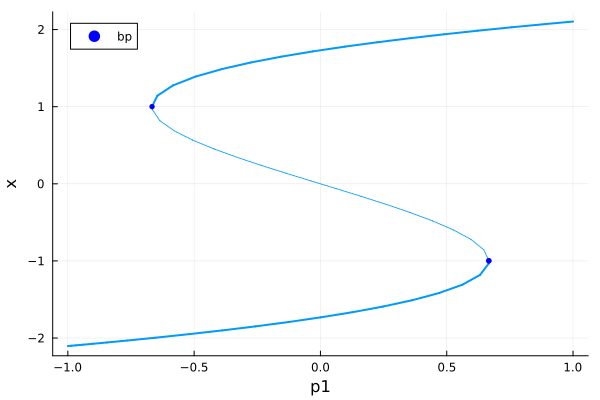
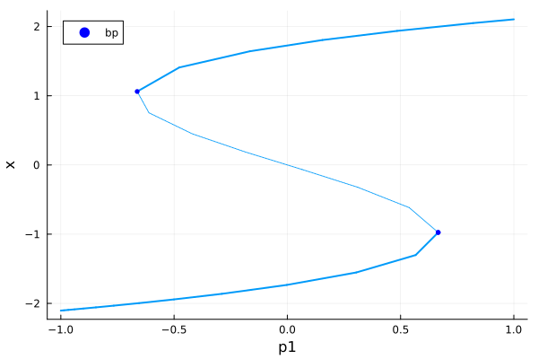
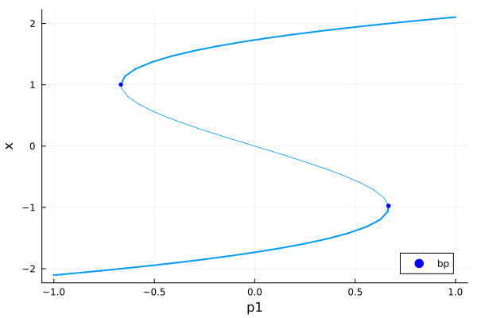
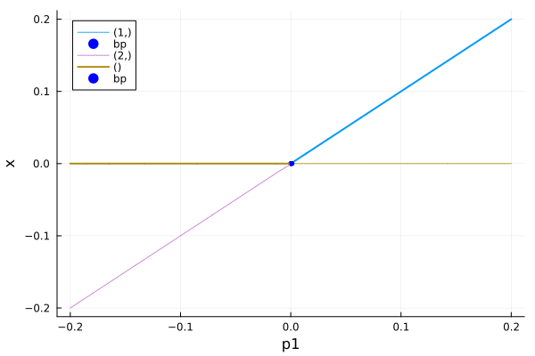
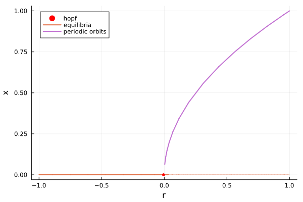
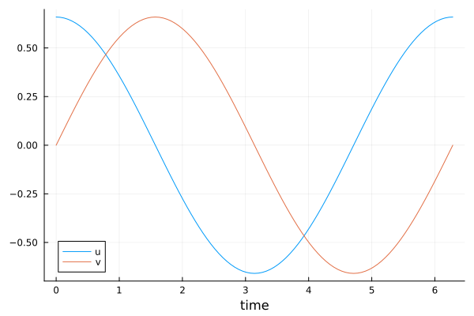
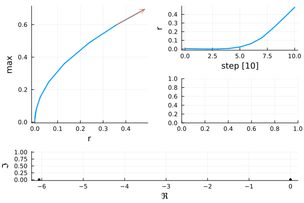
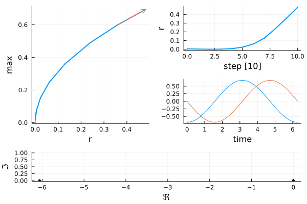

🚀 Get Started with BifurcationKit
- 🚀 Get Started with BifurcationKit
This tutorial will introduce you to the functionalities for computing bifurcation diagrams and follow branches of solutions.
Example 1: solving the perturbed pitchfork equation
In this example, we will solve the equation
\[\mu + x-\frac{x^3}{3}=0\]
as function of $\mu$ by looking at the solutions in the connected component of $(x_0,\mu_0)\approx(-2,-1)$. Here $x\in\mathbb R$ is the state variable and $\mu$ is our parameter. The general workflow is to define a problem, solve the problem, and then analyze the solution. The full code for solving this problem is:
using BifurcationKit, PlotsF(x, p) = @. p[1] + x - x^3/3prob = ODEBifProblem(F, [-2.], [-1.], 1; record_from_solution = (x,p; k...) -> x[1])br = continuation(prob, PALC(), ContinuationPar(p_min = -1., p_max = 1.))plot(br)
where the pieces are described below.
Step 1: Defining a problem
To solve this numerically, we define a problem type by giving it the equation, the initial condition, the parameters and the parameter axis to solve over:
prob = ODEBifProblem(F, [-2.], # initial condition x0 [-1.], # set of parameters 1; # parameter index for continuation record_from_solution = (x,p; k...) -> x[1])┌─ Bifurcation problem with uType Vector{Float64}
├─ Inplace: false
├─ Dimension: 1
├─ Symmetric: false
└─ Parameter: p1Note that BifurcationKit.jl will choose the types for the problem based on the types used to define the problem type. For our example, notice that u0 is a Vector{Float64}, and therefore this will solve with the dependent variables being Vector{Float64}. You can use this to choose to solve with Float32 for example to run this on the GPU (see example).
You can customize a few scalar indicators for each step (for example if you don't want to save all solutions) by providing a function record_from_solution. You can also control how the solution is plotted during a continuation run by providing a function plot_solution. This is especially useful when studying PDE for example.
Step 2: Solving a problem
After defining a problem, you "solve" it using continuation.
br = continuation(prob, PALC(), ContinuationPar(p_min = -1., p_max = 1.))The solvers can be controlled using the available options ContinuationPar. For example, we can increase the maximum continuation step (in order to get a less points) by using the command dsmax = 0.25
using Plotsopts = ContinuationPar(p_min = -1., p_max = 1., dsmax = 0.25, max_steps = 1000)br = continuation(prob, PALC(), opts)scene = plot(br)
Choosing a continuation algorithm
BifurcationKit.jl offers a much wider variety of continuation algorithms than traditional continuation software. Many of these algorithms are from recent research and have their own strengths and weaknesses. Each algorithm comes with a doc string, for example PALC. You can also chose a different tangent predictor in PALC
opts = ContinuationPar(p_min = -1., p_max = 1.)br = continuation(prob, PALC(tangent = Bordered()), opts)scene = plot(br)or you can use the Moore-Penrose continuation algorithm
opts = ContinuationPar(p_min = -1., p_max = 1.)br = continuation(prob, MoorePenrose(), opts)scene = plot(br)
Step 3: Analyzing the solution
The result of continuation is a solution object. A summary of the result is provided by the show method:
show(br) # this is equivalent to the REPL julia> br ┌─ Curve type: EquilibriumCont
├─ Number of points: 55
├─ Type of vectors: Vector{Float64}
├─ Parameter p1 starts at -1.0, ends at 1.0
├─ Algo: MoorePenrose (PALC [Secant])
└─ Special points:
- # 1, bp at p1 ≈ +0.66597167 ∈ (+0.66597167, +0.66658738), |δp|=6e-04, [converged], δ = ( 1, 0), step = 20
- # 2, bp at p1 ≈ -0.66665277 ∈ (-0.66666619, -0.66665277), |δp|=1e-05, [converged], δ = (-1, 0), step = 38
- # 3, endpoint at p1 ≈ +1.00000000, step = 54From there, you can see that the branch has 55 points, the algorithm is also recalled because it can be modified internally. This summary shows that two bifurcation points where detected. At each such point, the couple δ indicates how many real/complex eigenvalues crossed the imaginary axis. This is useful for debugging or when non generic bifurcations are encountered.
We can access the 5th value of the branch with:
br[5](x = -2.074261568428699, param = -0.9006174451280271, itnewton = 2, itlinear = 0, ds = 0.04102643120243098, n_unstable = 0, n_imag = 0, stable = true, step = 4, eigenvals = ComplexF64[-3.302561054260287 + 0.0im], eigenvecs = ComplexF64[1.0 + 0.0im;;])The solution contains many other fields:
propertynames(br)(:branch, :eig, :sol, :contparams, :kind, :prob, :specialpoint, :alg)Hence, the eigenelements are saved in br.eig, the solutions are saved in br.sol and the bifurcation points in br.specialpoint.
Plotting branches
While one can directly plot solution time points using the tools given above, convenience commands are defined by recipes for Plots.jl. To plot the solution object, simply call plot:
#]add Plots # You need to install Plots.jl before your first time using it!using Plots#plotly() # You can optionally choose a plotting backendplot(br)Example 2: simple branching
In this example, we will solve the equation
\[0 = x\cdot(\mu-x)\]
as function of $\mu$. Here $u\in\mathbb R$ is the state variable and $\mu$ is our parameter.
In our example, we know by calculus that the solutions to this equation are $u_0(\mu)=0$ and $u_1(\mu)=\mu$ but we will use BifurcationKit.jl to solve this problem numerically, which is essential for problems where a symbolic solution is not known.
In case we know there are many branches, the best is to use an automatic method to compute them all. We will focus on bifurcationdiagram which computes the connected component of the initial guess in the plane $(x,\mu)$. An alternative is to use Deflated Continuation.
We define a problem type by giving it the equation, the initial condition, the parameters and the parameter axis to solve over:
using Plotsusing BifurcationKitFbp(u, p) = @. u * (p[1] - u)# bifurcation problemprob = ODEBifProblem(Fbp, [0.0], [-0.2], # specify the continuation parameter or its index 1, record_from_solution = (x, p; k...) -> x[1])┌─ Bifurcation problem with uType Vector{Float64}
├─ Inplace: false
├─ Dimension: 1
├─ Symmetric: false
└─ Parameter: p1We then aim at calling bifurcationdiagram which will do the jobs of computing recursively the branches which are connected together. Compared to continuation, bifurcationdiagram requires the maximal level of recursion (in this case 2 because there are 2 branches) and a function providing the continuation parameters for each branch (which may differ from branch to branch if the user decides). This explains the following code:
# options for continuationopts_br = ContinuationPar( # parameter interval p_max = 0.2, p_min = -0.2, # detect bifurcations with bisection method # we increase the precision of the bisection n_inversion = 4)# automatic bifurcation diagram computationdiagram = bifurcationdiagram(prob, PALC(), # very important parameter. This specifies the maximum amount of recursion # when computing the bifurcation diagram. It means we allow computing branches of branches # at most in the present case. 2, opts_br, )[Bifurcation diagram]
┌─ From 0-th bifurcation point.
├─ Number of children: 2
└─ Root (recursion level 1)
┌─ Curve type: EquilibriumCont
├─ Number of points: 9
├─ Type of vectors: Vector{Float64}
├─ Parameter p1 starts at -0.2, ends at 0.2
├─ Algo: PALC [Secant]
└─ Special points:
- # 1, bp at p1 ≈ +0.00108349 ∈ (-0.00333593, +0.00108349), |δp|=4e-03, [converged], δ = ( 1, 0), step = 6
- # 2, endpoint at p1 ≈ +0.20000000, step = 8
You can plot the diagram like
plot(diagram)
Example 3: continuing periodic orbits
In this example, we will compute periodic orbits of the Stuart-Landau oscillator:
\[\begin{aligned} \frac{du}{dt} &= r u - \nu v - (u^2+v^2) (c_3 u - \mu v) \\ \frac{dv}{dt} &= r v + \nu u - (u^2+v^2) (c_3 v + \mu u). \end{aligned}\]
The ODE is easily written with a function:
using BifurcationKit, Plotsfunction Fsl(X, p) (;r, μ, ν, c3) = p u, v = X ua = u^2 + v^2 [ r * u - ν * v - ua * (c3 * u - μ * v) r * v + ν * u - ua * (c3 * v + μ * u) ]endFsl (generic function with 1 method)and then we can use this to define a bifurcation problem:
par_sl = (r = 0.1, μ = 0., ν = 1.0, c3 = 1.0)u0 = zeros(2)prob = ODEBifProblem(Fsl, u0, par_sl, (@optic _.r))┌─ Bifurcation problem with uType Vector{Float64}
├─ Inplace: false
├─ Dimension: 2
├─ Symmetric: false
└─ Parameter: rFor this simple problem, we detect the existence of periodic orbits by locating a Hopf bifurcation. This is done as in the previous example by continuing the zero solution:
br = continuation(prob, PALC(), ContinuationPar(), bothside = true) ┌─ Curve type: EquilibriumCont
├─ Number of points: 25
├─ Type of vectors: Vector{Float64}
├─ Parameter r starts at -1.0, ends at 1.0
├─ Algo: PALC [Secant]
└─ Special points:
- # 1, endpoint at r ≈ -1.00000000, step = 0
- # 2, hopf at r ≈ -0.00595553 ∈ (-0.00595553, +0.00299379), |δp|=9e-03, [converged], δ = ( 2, 2), step = 8
- # 3, endpoint at r ≈ +1.00000000, step = 24
In the result above, we see that a Hopf bifurcation has been detected:
- # 2, hopf at r ≈ -0.00595553 ∈ (-0.00595553,...
We compute the branch of periodic orbits which is nearby. We thus provide the branch br, the index of the special point we want to branch from: 2 in this case and a method Collocation(20, 5) to compute periodic orbits. You can look at Periodic orbits computation for a list of all methods. Suffice it to say that Collocation is the default method in the case of ODEs.
br_po = continuation(br, 2, ContinuationPar(), Collocation(20, 5) ) ┌─ Curve type: PeriodicOrbitCont from Hopf bifurcation point.
├─ Number of points: 15
├─ Type of vectors: Vector{Float64}
├─ Parameter r starts at 0.00404446825657828, ends at 1.0
├─ Algo: PALC [Secant]
└─ Special points:
- # 1, endpoint at r ≈ +1.00000000, step = 14
Analyzing the solution
The branch of periodic orbits has been computed. You can look at what is recorded in the first point on the branch:
br_po[1](max = 0.06359613398726571, min = -0.06359613398726569, amplitude = 0.1271922679745314, period = 6.283185307179591, param = 0.00404446825657828, itnewton = 0, itlinear = 0, ds = 0.01, n_unstable = 0, n_imag = 0, stable = true, step = 0, eigenvals = ComplexF64[-9.730549699374526e-12 + 0.0im, -0.050824287079358155 + 0.0im], eigenvecs = nothing)It shows that the maximum/minimum/amplitude/period of the periodic orbit are recorded by default. You can also plot all the branches as follows
plot(br, br_po, branchlabel = ["equilibria", "periodic orbits"])
Finally, if you are interested in the periodic orbits saved in br_po, for example to plot it, the method get_periodic_orbit is what you are looking for:
sol = get_periodic_orbit(br_po, 10)plot( sol.t, sol[1,:], label = "u", xlabel = "time")plot!(sol.t, sol[2,:], label = "v", xlabel = "time")
Plotting the periodic orbit during continuation
If you plot the solution during continuation, you see that the right bottom panel is empty ; this panel is used to plot the solution at the current continuation step:
br_po = continuation(br, 2, br.contparams, Collocation(20, 5); plot = true, )
(Note that the bottom panel is a plot of the eigenvalues of the jacobian in the complex plane at the current continuation step. )
In order to plot the periodic solution during continuation, you need to supply a periodic_solution to continuation. This is not done by default because in some cases, obtaining the solution is costly (e.g. for Shooting methods). Based on the previous paragraph, it is straightforward to implement this plotting function:
br_po = continuation(br, 2, br.contparams, Collocation(20, 5); plot = true, plot_solution = (x, par; iter, state, k...) -> begin # par is a Named tuple which contains # the problem for computing periodic orbits # and the value of the parameter at the current step sol = get_periodic_orbit(par.prob, x, BK.getparams(iter, state)) plot!(sol.t, sol.u'; xlabel = "time", label="", k...) end )